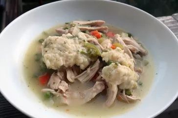

Description
Instant Pot Chicken and Dumplings is a comforting, one-pot dish. Tender chicken, vegetables, and fluffy dumplings are cooked in a creamy broth, creating a hearty and satisfying meal.
Ingredients
- 1.5 pounds boneless, skinless chicken breasts or thighs
- 4 cups chicken broth
- 2 cups mixed vegetables (carrots, peas, celery)
- 1 onion, chopped
- 3 cloves garlic, minced
- 1 teaspoon dried thyme
- 1/2 teaspoon dried rosemary
- Salt and black pepper to taste
- 1 cup all-purpose flour
- 1/2 cup milk
- 3 tablespoons butter
- Baking powder for dumplings
Steps
- Sauté chopped onions and minced garlic in the Instant Pot using the sauté function.
- Add chicken pieces and brown them briefly on each side.
- Season with thyme, rosemary, salt, and black pepper. Layer mixed vegetables on top.
- Pour chicken broth over the ingredients.
- Seal the Instant Pot, set it to High Pressure, and cook for a specified time (usually 10-12 minutes).
- Carefully perform a quick pressure release.
- Mix flour, milk, and butter to form a sticky dough.
- Drop spoonfuls of dumpling dough into the stew.
- Set the Instant Pot to the sauté function again, and cook until dumplings are fluffy and cooked through.
- Ladle the stew and dumplings into bowls, and enjoy your Instant Pot Chicken and Dumplings.